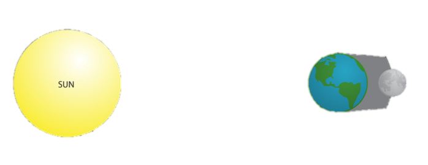

LUNAR ECLIPSE
LUNAR ECLIPSE


Lunar eclipse happens when Earth aligns between the Sun and the Moon and blocks the Sun's rays from directly reaching the Moon. The Moon does not have its own light. It shines because its surface reflects the Sun's rays. A lunar eclipse only happens during a full moon and can last as long as six hours, according to the European Space Agency (ESA).
Types of Lunar Eclipses
There are three types of lunar eclipses depending on how the sun, Earth and moon are aligned at the time of the eclipse.
- Total lunar eclipse takes place when the Earth comes between the Sun and the Moon and its shadow covers the Moon. Eclipse watchers can see the Moon turn red when the eclipse reaches totality.
- Partial lunar eclipse happens when the Earth moves between the Sun and the Full Moon, but they are not precisely aligned. Only part of the Moon's visible surface moves into the dark part of the Earth's shadow.
- Penumbral lunar eclipse takes place when the Moon moves through the faint, outer part of Earth's shadow, the penumbra. This type of eclipse is not as dramatic as other types of lunar eclipses and is often mistaken for a regular Full Moon.
Upcoming 5 Lunar Eclipses
| Date |
|
Type |
| 7-8 Nov 2022 |
: |
Lunar Eclipse(Total) |
| 5-6 May 2023 |
: |
Lunar Eclipse(Penumbral) |
| 28-29 Oct 2023 |
: |
Lunar Eclipse(Partial) |
| 24-25 Mar 2024 |
: |
Lunar Eclipse(Penumbral) |
| 17-18 Sep 2024 |
: |
Lunar Eclipse(Partial) |